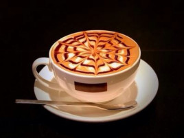

| 咖啡类型 | 价格 |
|---|---|
| 拿铁咖啡 | ¥15 |
| 卡布奇诺 | ¥18 |
| 摩卡咖啡 | ¥18 |
| 美式咖啡 | ¥12 |
拿铁
“拿铁”是意大利文“Latte”的 音译，代表“牛奶”， 拿铁咖啡 拿铁咖啡(6张) 拿铁咖啡(CoffeeLatte)是花式咖啡的一种，是咖啡与牛奶交融的极至之作。意式拿铁咖啡为纯牛奶加咖啡，美式拿铁则将部分牛奶替换成奶泡，本地的拿铁多为此种。
卡布奇诺

卡布奇诺是一种加入以同量的意大利特浓咖啡和蒸汽泡沫牛奶相混合的意大利咖啡。此时咖啡的颜色，就像卡布奇诺教会的修士在深褐色的外衣上覆上一条头巾一样，咖啡因此得名。传统的卡布奇诺咖啡是三分之一浓缩咖啡，三分之一蒸汽牛奶和三分之一泡沫牛奶，并在上面撒上小颗粒的肉桂粉末。
摩卡咖啡
摩卡咖啡其历史要追溯到咖啡的起源。它是由意大利浓缩咖啡、巧克力酱、鲜奶油和牛奶混合而成，摩卡得名于有名的摩卡港。十五世纪，整个中东非咖啡国家向外运输业不兴盛，也门摩卡是当时红海附近主要输出一个商港，当时咖啡主要是集中到摩卡港再向外输出的非洲咖啡，都被统称摩卡咖啡。
美式咖啡

“美式咖啡”（英文：Americano，意大利语：Caffè Americano）咖啡的一种，是最普通的咖啡。是使用滴滤式咖啡壶所制作出的黑咖啡，又或者是意式浓缩中加入大量的水制成。